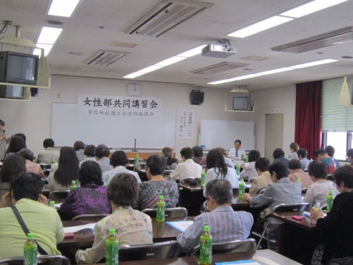

女性部とは
地域経済を支える女性の団体として、地域商工業の振興発展と女性の地位向上をはかることを目的としています。地域沽券活動や研修会、ボランティア活動など、幅広い活動を通じ、組織の絆を強め、時代の変革を的確にとらえ、積極的に事業を展開しています。
資格
安古市町商工会の会員たる商工業者(法人にあってはその役員)もしくはその配偶者、又は親族であり、かつその会員の営む事業に従事している女性の者。
会費
3,000円（年会費）
事業内容
商工会活動・地域商工業の振興発展のサポーターとして講習会の開催や環境美化運動等様々な活動をしています。また、部員活動を通して仲間の輪を広げるだけでなく、自分を磨き、リーダーの育成、女性部同士の交流、組織活性を目的として活動しています。
活動内容

- 調査研修旅行
- 部員レクリエーション
- 慰問活動
- 各種講習会
- セミナー参加
- ビーチボールバレー など
ビーチボールバレーの練習会
安公民館のホールにて、第１・３月曜日の１４時から２時間行っています。